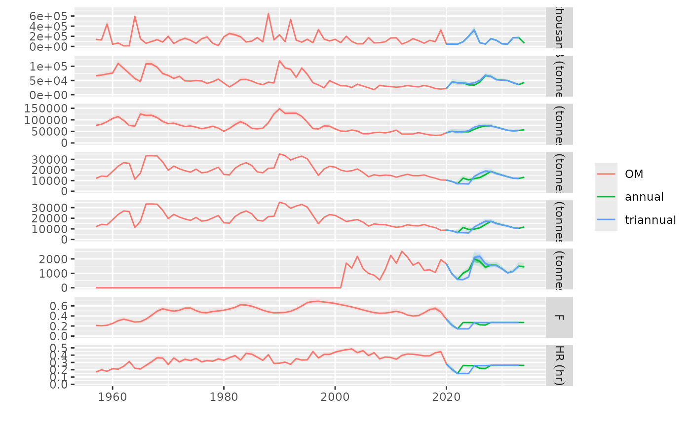
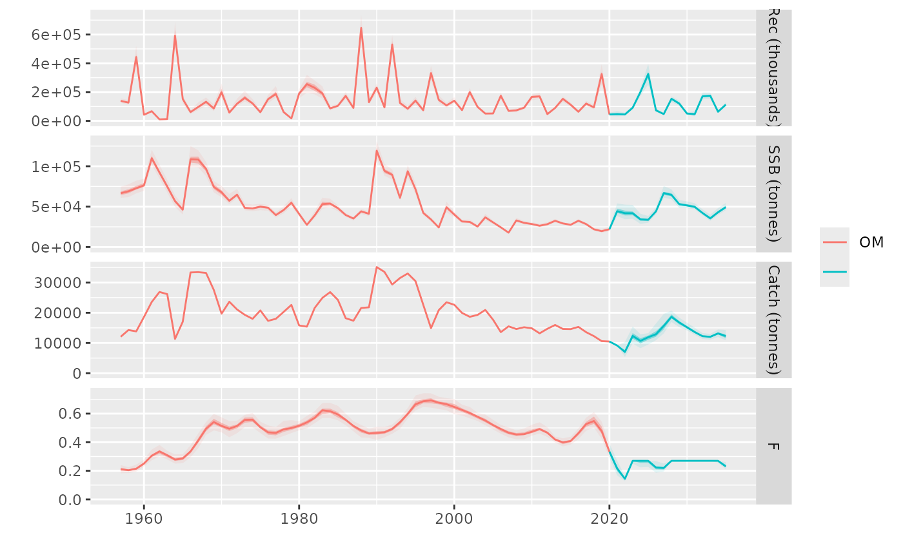

An individual management procedure (MP) defined by the control argument, is run
under a temporal configuration defined in the args list, and on a given operating
model (om). Particular observation error (oem), and implementation error model
(iem) elements can also be specified.
Usage
mp(
om,
oem = NULL,
iem = NULL,
control = ctrl,
ctrl = control,
args,
scenario = "NA",
tracking = "missing",
verbose = !handlers(global = NA),
progress = handlers(global = NA),
parallel = TRUE,
window = TRUE,
.DEBUG = FALSE
)Arguments
- om
The operating model (OM), an object of class FLom or FLombf.
- oem
The observation error model (OEM), an object of class FLoem.
- iem
The implementation error model (IEM), an object of class FLiem.
- ctrl
A control structure for the MP run, an object of class mpCtrl.
- args
MSE arguments, list. Only 'iy', the intermediate (starting) year, is required.
- scenario
Name of the scenario tested in this run, character.
- tracking
Extra elements (rows) to add to the standard tracking FLQuant in its first dimensions, character. Elements can also be added by individual control modules.
- verbose
Should output be verbose (year being executed) or not, logical.
Details
Calls to mp() can be run in parallel using %dofuture%. Iterations in the om are
split across the number of availabnle workers, as set by a call to plan(). This can
specially improve computations for MPs fitting any kind of model or doing other
non-vectorizsed calculations.
Progress in the simulation is reported via a progress bar as set by the progressr
package, if a global handler is set up using handlers(global=TRUE). This bar works
when a parallel plan has been set up. Otherwise, a simple print out of the year being
run is shown.
The args list controls the timing of the simulation and its elements:
iy: the initial year of simulation inn which decisions are made. The only required element in
args.fy: final year, defaults to last year in
omobject.y0: first data year, defaults to first year in
omobject.nsqy: number of years for status-quo calculations, defaults to 3.
data_lag: number of years between last data point and decision year, defaults to 1.
management_lag: number of years between decision and its application. Must be greater than 0, and defaults to 1.
frq: frequendcy of advice in years, defaults to 1.
vy: vector of years in which advice is givenm, defaults to a sequence between
iyandfyeveryfrqyears.
Examples
# dataset contains both OM (FLom) and OEM (FLoem)
data(sol274)
#> Warning: namespace ‘patchwork’ is not available and has been replaced
#> by .GlobalEnv when processing object ‘om’
#> Warning: namespace ‘dplyr’ is not available and has been replaced
#> by .GlobalEnv when processing object ‘om’
#> Warning: namespace ‘TMB’ is not available and has been replaced
#> by .GlobalEnv when processing object ‘om’
#> Warning: namespace ‘remotes’ is not available and has been replaced
#> by .GlobalEnv when processing object ‘om’
#> Warning: namespace ‘shiny’ is not available and has been replaced
#> by .GlobalEnv when processing object ‘om’
#> Warning: namespace ‘htmlwidgets’ is not available and has been replaced
#> by .GlobalEnv when processing object ‘om’
#> Warning: namespace ‘xtable’ is not available and has been replaced
#> by .GlobalEnv when processing object ‘om’
#> Warning: namespace ‘FLAssess’ is not available and has been replaced
#> by .GlobalEnv when processing object ‘om’
#> Warning: namespace ‘FLSRTMB’ is not available and has been replaced
#> by .GlobalEnv when processing object ‘om’
# Set control: sa and hcr
control <- mpCtrl(list(
est = mseCtrl(method=perfect.sa),
hcr = mseCtrl(method=hockeystick.hcr, args=list(lim=0,
trigger=41500, target=0.27))))
# Runs mp
tes <- mp(om, oem=oem, ctrl=control, args=list(iy=2021, fy=2034))
#> 2021 - 2022 - 2023 - 2024 - 2025 - 2026 - 2027 - 2028 - 2029 - 2030 - 2031 - 2032 - 2033 -
# Runs mp with triannual management
tes3 <- mp(om, oem=oem, ctrl=control, args=list(iy=2021, fy=2034, frq=3))
#> 2021 - 2024 - 2027 - 2030 -
# Compare both runs
plot(om, list(annual=tes, triannual=tes3))

# 'perfect.oem' is used if none is given
tes <- mp(om, ctrl=control, args=list(iy=2021, fy=2035))
#> 2021 - 2022 - 2023 - 2024 - 2025 - 2026 - 2027 - 2028 - 2029 - 2030 - 2031 - 2032 - 2033 - 2034 -
plot(om, tes)
